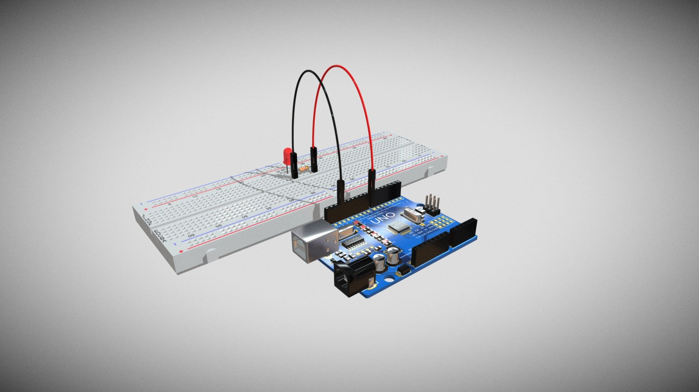

Meus projetos

Figma: Minha rede social
Este projeto é uma rede social...

título
descrição
título
descrição
Eu sou gabriel
Sou estudante do ensino médio. Me identifico com a área de exatas, gosto de jogar bola
Minhas habilidades
jogos eletronicos
esportes
HTML
Este projeto é uma rede social...
descrição
descrição
O nosso alicativo foi criado com a intenção de divulgar o trablho de varias empresas e mostrar carros de diferentes moelos, mostrando sua evolucção adaptaçoes ate chegar em um projeto unico, feito para mostrar carros e sua evolução.
A estrututura do site efoi baseada em mostrar carros um alicativo que seria a evolução do instagram aplicativo direciodado para o publico amadores de caros antigos, com a intenção de apenas mostrar automoveis e divulgar produtos.
Nosso aplicativo foi usado poucas cores, pois a intenção é apenas as imagens mostradas no aplicativo serem chamativas, as fotos sempre tendo cores fortes, a plataforma permite varias outras pessoas tanbem usar.
A robótica serve para criar e controlar robôs e sistemas automatizados, automatizando tarefas, aumentando a eficiência e a precisão, e desenvolvendo soluções para diversas áreas, como a indústria medinae educação.
Para fazer um semafaro de LED na robotica e nescessario os seguintes materiais, uma placa arduino UNO ou similar, LEDS (vermelho, amarelo e verde), resistores de 220, protoboard e fios, e uma fonte de alimentação ou cabo USB.